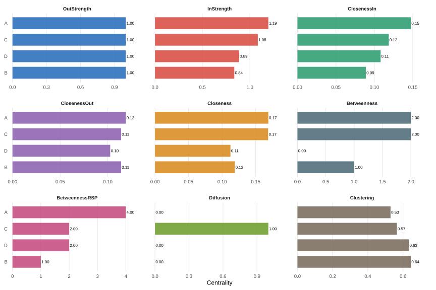
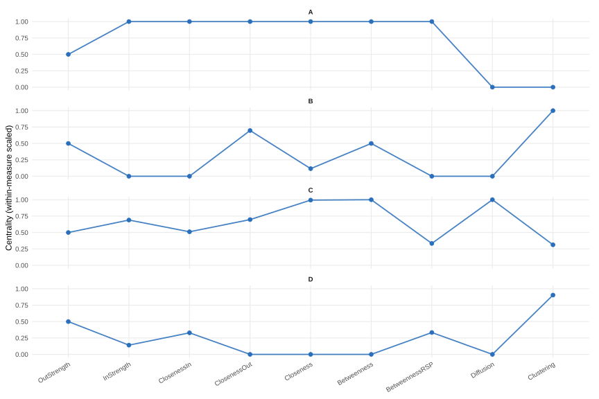
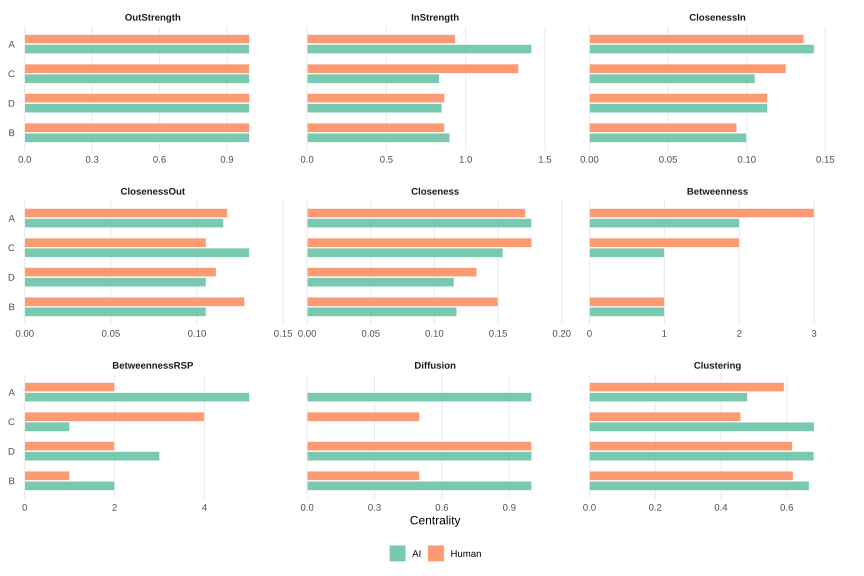
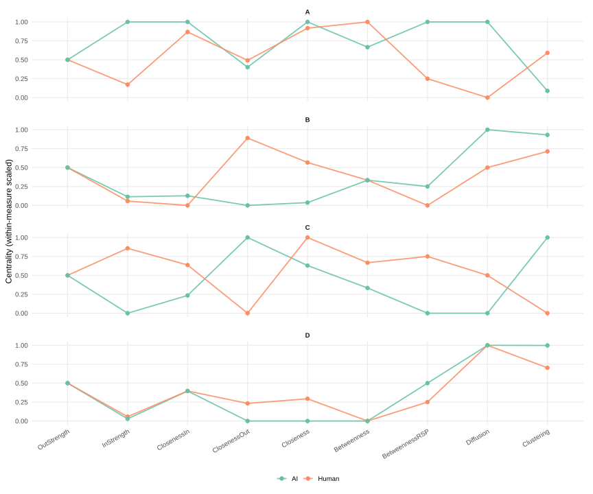

Nestimate centrality parity preview
Preview plots generated from net_centrality() after adding
tna-compatible measures: strength, closeness, betweenness,
randomized-shortest-path betweenness, diffusion, and clustering.
Single network: faceted bars

Single network: centrality profiles

Grouped networks: faceted bars

Grouped networks: centrality profiles
